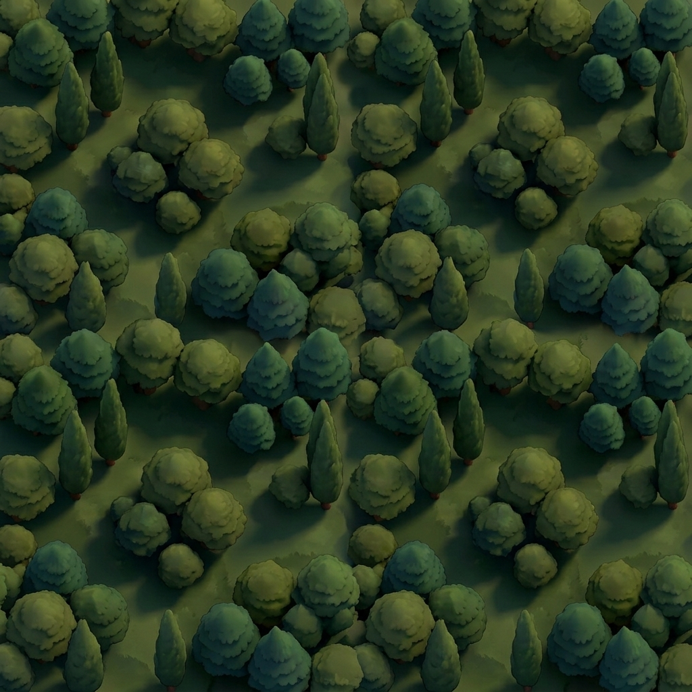
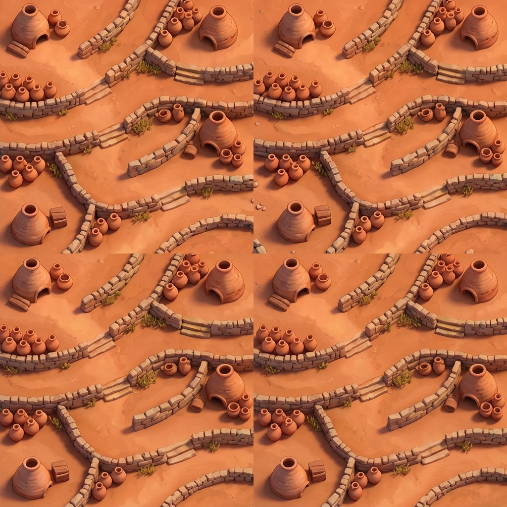
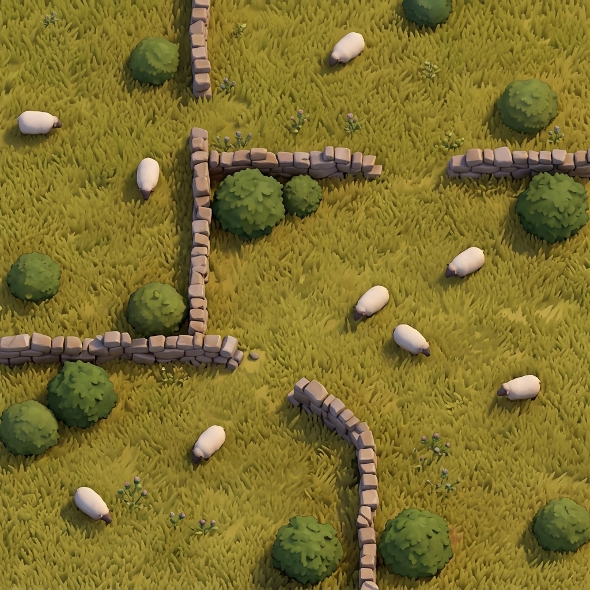
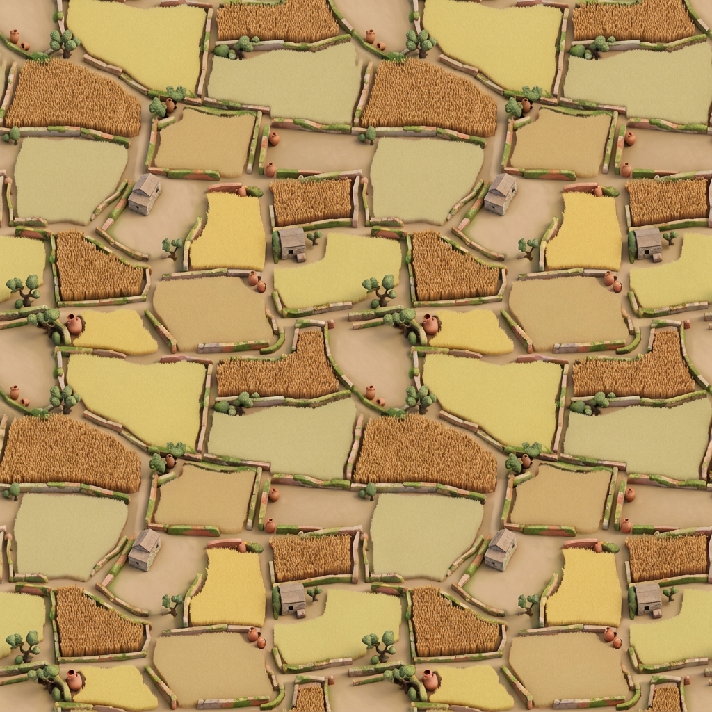
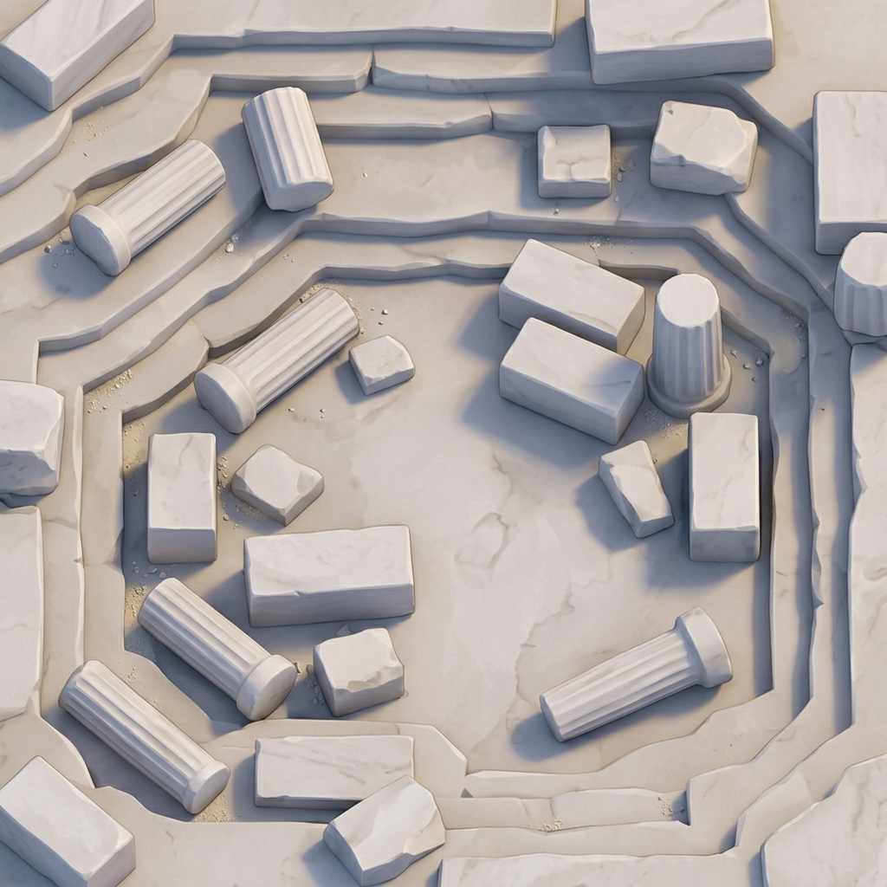
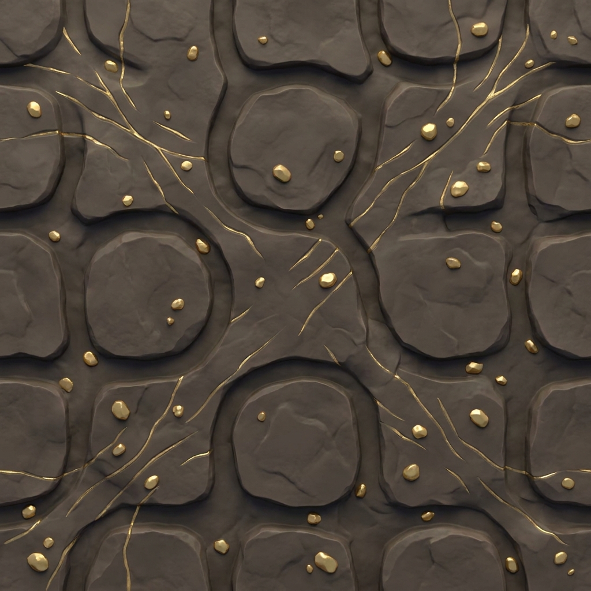
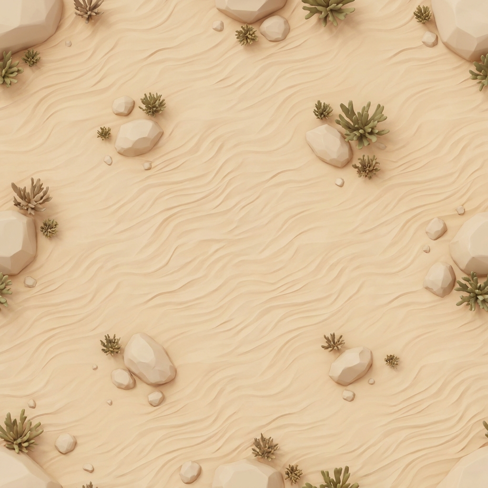
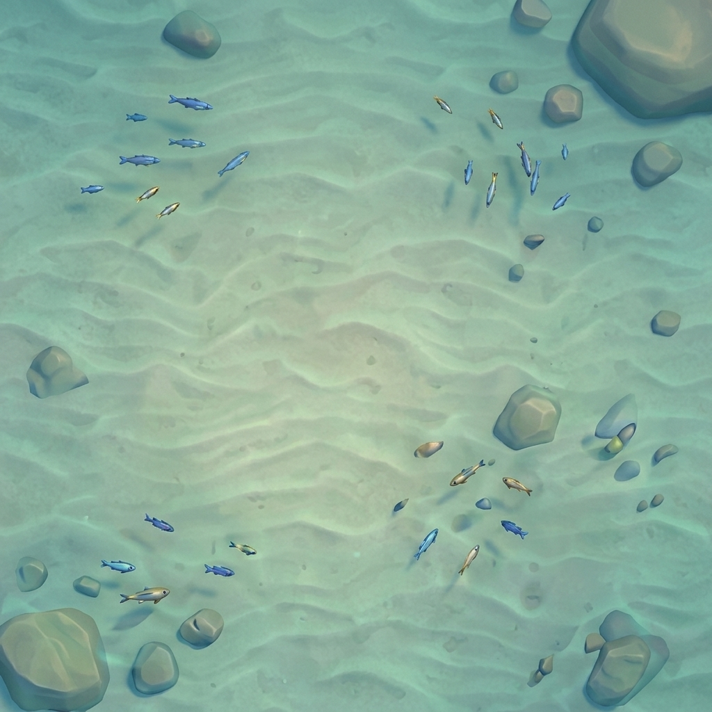
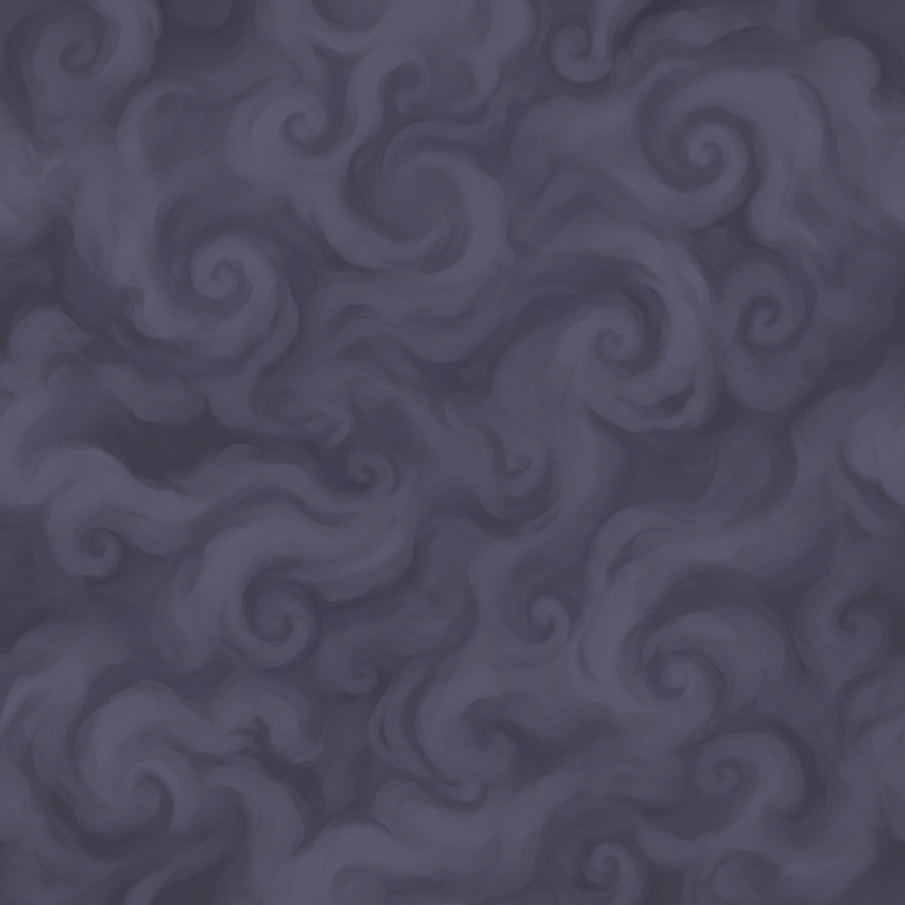

Les dix terrains
Chaque hexagone de terre productive donne une ressource, et une seule. Une colonie adjacente en reçoit une par production ; une cité, deux.

Forêt donne du bois
Collines donnent de la brique
Pâturage donne de la laine
Champ donne du blé
Montagne donne du minerai
Mine d’or donne de l’or — rare
Désert ne produit rien
Haut-fond donne du poisson — pas encore semé
Brume terrain inexploré — pas en jeuLes images ci-dessus sont exactement celles du plateau. Elles sont pensées pour être reconnues à cent vingt pixels de large et de loin : chaque terrain impose une couleur dominante franche, parce que c’est la couleur — et elle seule — qui permet de lire un plateau de cinquante hexagones dézoomé sur un téléphone.
Les cinq ressources de base
Ce sont elles qui bâtissent. Tout le reste du jeu consiste à les obtenir dans les bonnes proportions.
| Ressource | Vient de | Sert à | Cours d’ouverture |
|---|---|---|---|
| Bois | Forêts | Routes, voies maritimes, colonies | 5 |
| Brique | Collines | Routes, voies maritimes, colonies | 4 |
| Laine | Pâturages | Colonies, voies maritimes, cartes | 4 |
| Blé | Champs | Colonies, cités, métropoles, cartes | 3 |
| Minerai | Montagnes | Cités, métropoles, cartes | 3 |
Le cours d’ouverture n’est pas décoratif : il dit déjà ce que vaut chaque chose. Le bois est partout et coûte 5 cartes à la banque ; le minerai est rare et n’en coûte que 3. Ces prix bougent ensuite selon ce que la table vend — voir le marché.
Bois et brique dominent la première demi-heure : on pose des routes et des colonies. Puis la demande bascule vers le minerai et le blé, qui font les cités, les métropoles et les cartes. Un pâturage qui vous semblait faible au départ devient une monnaie d’échange redoutable au milieu de partie.
L’or
Deux ou trois tuiles sur tout le plateau, une seule construction qui en réclame — et c’est la plus prestigieuse.
L’or ne se produit que sur les rares hexagones de mine, ou s’obtient au port minier, qui fond 2 minerai en 1 or à prix fixe. Il ne paye qu’une chose : la métropole, qui en demande deux. Il n’y a que trois métropoles pour toute la partie.
L’or est aussi la ressource la moins chère à la banque — 2 cartes, le plancher du jeu — ce qui en fait un excellent moyen de se débloquer quand il vous manque une brique. Un port n’améliore jamais ce prix : l’or est déjà au meilleur tarif possible.
Un convoi ne repart de Kalythéra avec un sceau que s’il y arrive chargé. Trois sceaux par génération, et le quatrième convoi rentre les mains vides — Les trois sceaux.
Le poisson
Il existe dans le code, il a une image et un cours. Aucun plateau ne le sème.
Le haut-fond est prévu, dessiné et chiffré, mais aucun des deux plateaux actuels — archipel ni disque — ne contient de tuile qui en produise. Vous ne verrez pas de poisson dans une partie aujourd’hui. Il est conservé plutôt que retiré : le jour où un plateau le sèmera, il n’y aura rien à rechiffrer.
Le poisson porte une valeur d’ouverture de 4 pour que le barème du marché soit complet, et rien d’autre.
Le désert
Trois ou quatre hexagones qui ne donnent rien — et où l’Errant commence sa carrière.
Un désert ne porte pas de jeton et ne produit jamais. Fonder à côté n’est pas une erreur en soi : un carrefour touche jusqu’à trois hexagones, et deux bons voisins valent mieux que trois médiocres. Mais deux déserts sur un même carrefour condamnent l’emplacement.
C’est aussi là que le voleur est déposé quand personne ne décide de sa place — un hexagone qui ne touche aucune construction, pour ne léser personne.
Lire un emplacement
Trois questions, dans cet ordre, avant de poser une colonie.
- Combien de chances par lancer ? Additionnez les chances des jetons voisins : un 6 et un 8 valent 10 sur 36, un 3 et un 11 valent 4. Un carrefour à trois hexagones forts vaut mieux qu’un carrefour à quatre hexagones faibles — et il n’y a jamais plus de trois hexagones autour d’un sommet.
- Quelles natures ? À douze joueurs, le blocage n’est presque jamais la pénurie : c’est la dispersion. Dix cartes réparties sur cinq types ne font jamais une cité. Un emplacement qui double une ressource que vous avez déjà vaut moins qu’un emplacement qui vous en apporte une que vous n’avez pas.
- Y a-t-il un port ? Un port spécialisé sur une ressource que vous produisez en excès transforme votre surplus en n’importe quoi. À cet effectif, l’accès au commerce conditionne l’expansion bien plus que dans un Catan à quatre.
Prendre deux fois le même bon nombre. Un 8 de forêt et un 8 de colline sur le même carrefour, c’est un carrefour muet près de neuf lancers sur dix, puis quatre cartes d’un coup. La régularité vaut mieux que le pic : vous jouez un tour actif sur douze, mais vous produisez à chaque lancer.